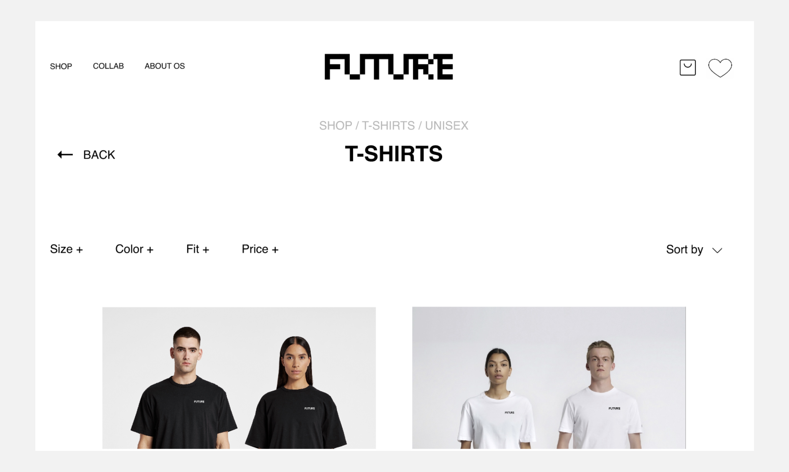
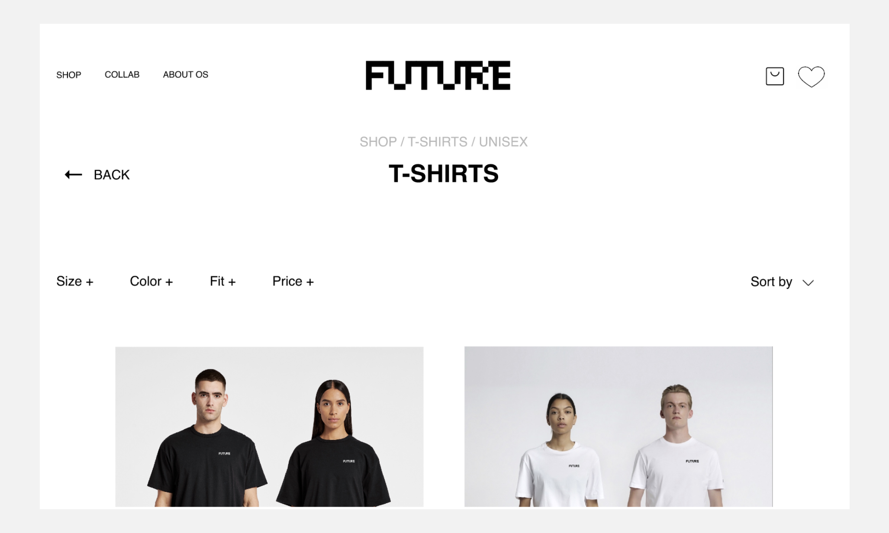
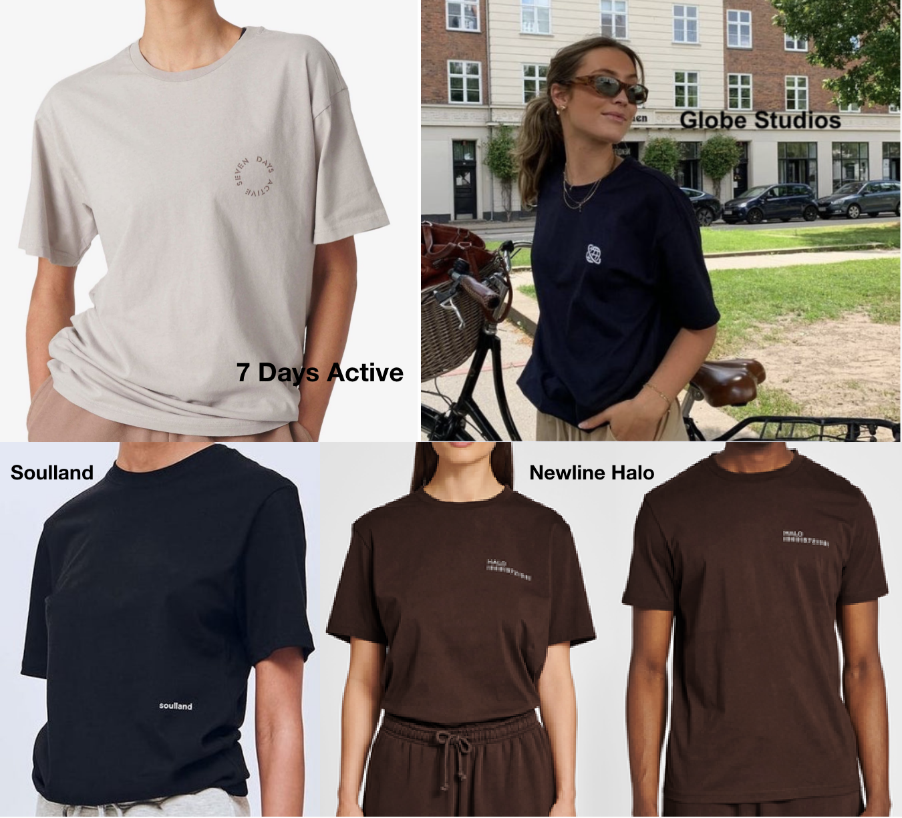
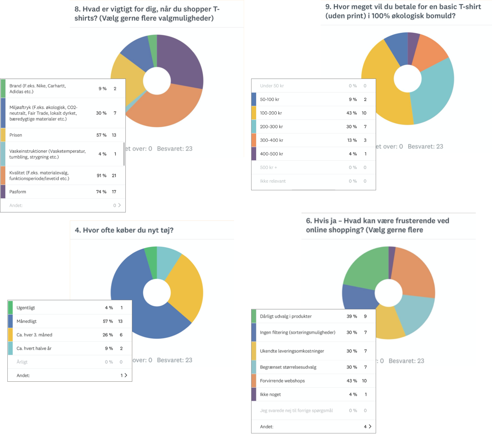
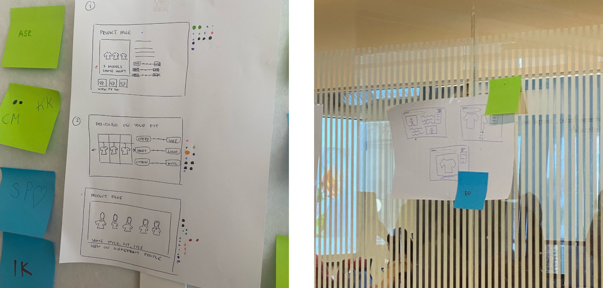
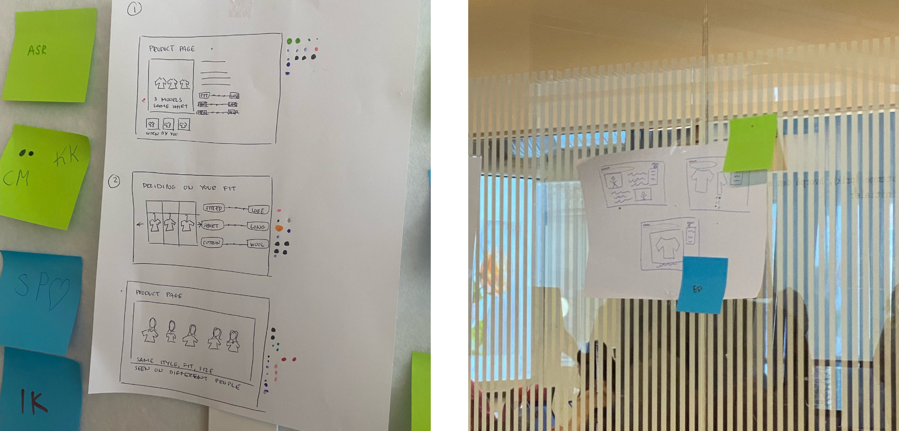
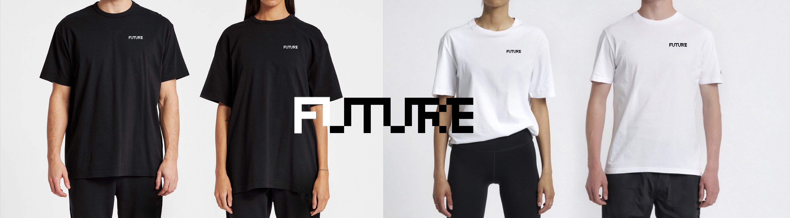

LØSNING
XD-PROTOTYPE
 

Koncept
I denne opgave skulle vi producere en prototype til en webshop, der sælger T-shirts. Vi startede med at skulle beslutte os for konceptet for webshoppen:
- Afsender: Dansk firma, der sælger unisex, basic box fit-T-shirts. Firmaet laver collabs med udvalgte velgørenhedsorganisationer, hvor overskuddet går ubeskåret til velgørenhedsorganisationen.
- Målgruppe: Unisex i alderen fra 18-30 år. Unge, der går op i bæredygtighed, minimalisme og velgørenhed.
- Produkter: T-shirten har et oversized box-fit og sælges i størrelserne XXS-XXL. T-shirtene er uden mønster (bortset fra collab-T-shirtene), men fås i forskellige neutrale farver. Udover T-shirts, sælger webshoppen totebags og tennissokker i neutrale nuancer. Tote bagsene er i kraftig bomuld i en beige farve med firmaets logo på og/eller et specifikt collab-design.
- USP (Unique Selling Points): Til køberen, der er træt af de traditionelle mand-/kvindepasformer. Dette design er helt basic og har et bredere box-fit. Det er til køberen, der ønsker et unisex look. T-shirten har en form som alle kan bruge uanset køn. Webshoppens produkter er produceret i Danmark og i økologisk materiale.
Research
For at undersøge hvad målgruppen egentlig fortrækker og/eller ønsker indenfor netop T-shirts, gik jeg i gang med en række forskellige research-metoder.
Deskresearch
Desk research bruges til at finde og sammenfatte allerede eksisterende information og data. Den sammenfattede information og data bruges bl.a. til at anskaffe viden om et bestemt emne og/eller undersøge trends indenfor en bestemt industri.
Instagram og TikTok
For at finde ud af hvilke T-shirts, der trender hos forbrugerne for tiden, har jeg undersøgt hvilke T-shirt trends, der florerer på sociale medier såsom Instagram og TikTok samt undersøgt udvalget på allerede eksisterende webshops. Først kiggede jeg på 6 forskellige kendte danskeres instagramprofiler (d. 27/09-2022). Disse profiler har alle mellem 40-200 tusinde følgere, så deres indhold bliver eksponeret for en stor mængde Instagrambrugere hver gang de lægger noget op. Jeg tog et kig på profilerne af Peter Falktoft (radio/podcastvært), Olivia Salo (TV-vært-/personlighed), Mads Emil Grove Møller (stylist og fashioninfluencer), Naomi Anwer (fashioninfluencer), Emilie Lilja (DJ og tidligere model) og Kesi (musiker). De T-shirts jeg så på de forskellige profiler har alle en rimelig løs pasform. Størstedelen af T-shirtene er i neutrale farver uden særlig meget print. Ud fra disse kendte Instagramprofiler, tyder det på, at løse, oversized T-shirts i sort, hvid og neutrale farver er en populær form for T-shirt for tiden. (Alle de undersøgte opslag er postet mellem d. 24. september 2021 og d. 28. oktober 2022).
Dernæst undersøgte jeg T-shirt trends på TikTok (d. 27/09-2022). I søgefeltet, søgte jeg efter ”T-shirt fashion”, for at se hvilke af de mest populære opslag med disse 2 ord, der ville komme frem. De mest populære videoer, der kom frem, havde alle mellem 29-240,2 tusinde likes. Endnu en gang er det især den oversized pasform, der bliver taget udgangspunkt i.

Andre webshops
Til sidst undersøgte jeg 4 forskellige webshops, der alle forhandler T-shirts (Globe Studios, 7 Days Active, Soulland og Newline Halo). De følgende T-shirts er nogle af webshoppernes bedst sælgende T-shirts (for kvinder/unisex).
Ud fra min desk research kan jeg se, at det, der trender mest indenfor T-shirts, er oversized T-shirts med en bred pasform og med lidt længere og bredere ærmer. Enten helt basic i en neutral farve eller evt. med et logo/brandnavn på brystet. Skal der være print på, er det, der trender, et unikt design placeret enten centret foran på T-shirten eller på ryggen.
Observation
Observation handler om at overvære f.eks. et rum eller en handling. Det bruges bl.a. til at undersøge en købers/kundes/brugers adfærd.
Jeg lavede min observation i basic-afdelingen i H&M i Amagercenteret onsdag d. 28/09-2022 kl 13:45.
Udfra min observation fik jeg følgende indsigter:
- Kunder, der er på udkig efter i et specifikt item bevæger sig meget målrettet rundt i butikken.
- Kunder der shopper i et travlt miljø som f.eks. et shoppingcenter, kan have svært ved at fokuserer på én ting ad gangen grundet de mange indtryk og de aktive omgivelser.
- Et stort udvalg af mange forskellige varer i en butik gør, at mange kunder kigger meget overfladisk på det tøj, der hænger på tøjstativerne, og bevæger sig relativt hurtigt videre.

Jeg fik ikke meget ud af denne observation. Til en anden gang ville jeg vælge observstionsemne C, Online T-shirt shopping, da jeg tror, at det ville være mere nærliggende, da jeg skal bruge denne resarch til at designe en brugervenlig webshob. Det kunne muligvis have givet mig en bedre forståelse for køberens adfærd og behov.
Interview
Interview bruges til at få et dybere indblik i/forståelse for et eller flere menneskers holdning til/erfaring med et bestemt emne. Interview kan bl.a. bruges til at få forskellige holdninger til/en yderligere uddybning af et emne.
Den interviewede er en 24 årig kvinde bosat på Frederiksberg. Til dagligt er hun studerende.
Interviewet kom ind på følgende emner:
- 1. Bæredygtighed/etisk produktion
- 2. Kvalitet
- 3. Pasform/unisex
- 4. Design
Her fik jeg følgende indsigter:
Survey
Survey er et værktøj, der bruges som indledende research til en undersøgelse. Det bruges til at anskaffe kvalitative og kvantitative data, ofte i form af et spørgeskema, der bliver besvaret af et vis antal mennesker. Disse data kan analyseres og bruges til at få et overfladisk overblik indenfor et emne.
Overstående diagrammer er et udpluk af de besvarelser jeg fik på nogle af spørgsmålene. Følgende er de indsigter jeg fik fra surveyens analyserede besvarelser:
- 1. De fleste ønsker en T-shirt med en god pasform i en god kvalitet, men vil betale en forholdsvis lav pris mellem 100- 200 kr. for den.
- 2. Pris, design og budskab/formål er vigtige for køberen, hvis personen skal købe en T-shirt, der støtter en velgørende organisation.
- 3. Alle gør brug af onlineshopping, men finder det mest frustrende, når webshoppen misleder dem og hvis der ikke er en optimal størrelsesguide/ repræsentation
- 4. Kvalitet, pasform og pris er på top 3 over hvad køberen finder vigtigt for en T-shirt.
_______________________________________________________________________________________________________________________________________________
 

Sketches
For at komme med idéer til hvordan jeg bedst muligt fremhæver mit koncept i designet af min webshop, gjorde jeg brug af The Four Step-Sketch. Første step var Notes, hvor jeg tog en masse noter fra andre eksisterende bruger-flows. Jeg lagde bl.a. mærke til hvordan man køber en vare, finder en bestemt størrelse eller navigerer rundt i de forskellige kategorier. På næste step, Ideas, skrev jeg en masse forskellige idéer ned til hvordan min webshop kunne se ud. Tredje step var Crazy 8's. Her skitserede jeg én idé i otte variationer. Jeg testede forskellige måde man kunne vise den samme T-shirts på forskellige kropstyper. Sidste step var Solution sketch. Her valgte jeg den idé som jeg syntes var bedst, og lavede en mere udførlig skitse. Jeg endte med at gå med en idé, hvor modellerne optræder i et par á en mand og en kvinde. T-shirten fås i fire farver og for hver ny farve, ses et nyt modelpar.
Decide-fasen
Sammen med resten af holdet, lavede vi et Art museum, hvor alle vores solution sketches blev hængt op på væggen. Her efter lavede vi et Heat map, hvor vi gik rundt blandt hinandens anonyme solution sketches og satte prikker ved de koncepter, vi syntes om. Herefter var der Speed critique, hvor facilitatoren (Marie) opsummerede hvilke koncepter/idéer, der havde fået flest prikker. Til sidst vi Supervote, hvor alle satte en enkelt prik ved den idé, de syntes var bedst. Alle fik en seddel hvorpå vi skrev, hvorfor vi valgte netop dette kocept.
_______________________________________________________________________________________________________________________________________________
Design af XD-prototype
Efter alle indsigter fra den udførte research samt sketch- og decide-fasen, skulle jeg nu lave min endelige prototype i XD.
Webshoppen/brandet hedder Future. Jeg har ved brug af Photoshop, sat brandnavnet ind på de T-shirts, der findes på billederne i prototypen.